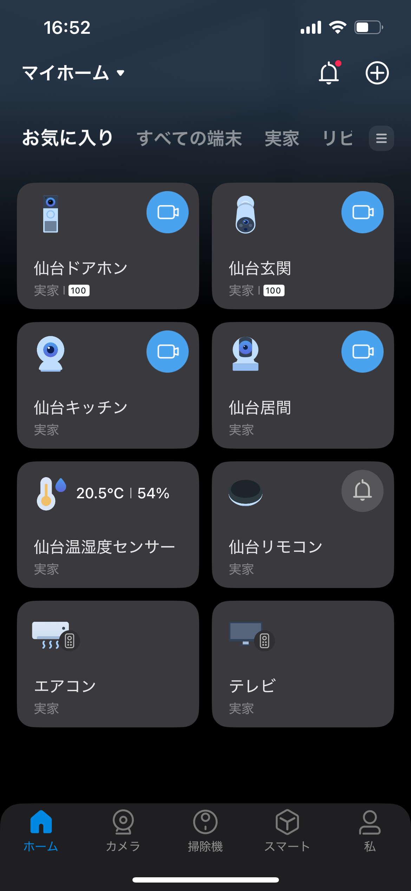
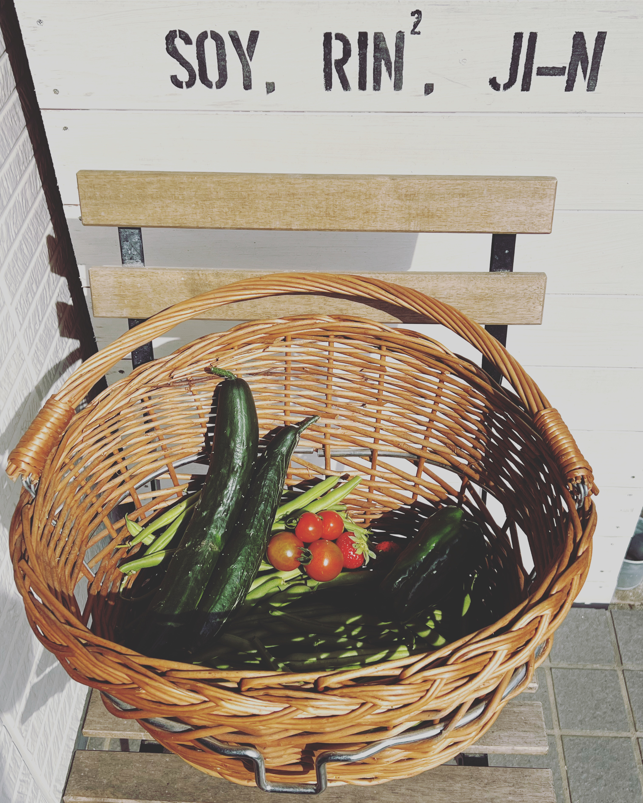

LABO（実験室）です。
既存の技術の活用しサンプルを作り、使い勝手を試し改善を繰り返し、楽しみながらお客様のお手元に届けていきます。
ICT支援活動

「gaiaスクール構想」によってICT技術の浸透が進んでいますが、学校の先生や保護者の負担も増えています。デジタル化を進める時間がない方々へのサポートを提供しています。
スマート化
一人暮らしの母（86歳）の見守りのため、実家＠仙台をスマートハウス化。
介護のための遠隔見守りを求める方は70%ですが、実際の導入は5%程度。
より多くの方が活用できるよう支援しています。
小規模マルシェ
家庭菜園（14㎡）で収穫された野菜を荒巻BJ@仙台のお客様に提供。
野菜価格が高騰する中で、地域に根付いた供給のあり方を模索しています。
認知度アップ
より多くの方に活動を知ってもらうため、ホームページ、LINE公式アカウントなどの活用方法を試行錯誤しながら改善を進めています。